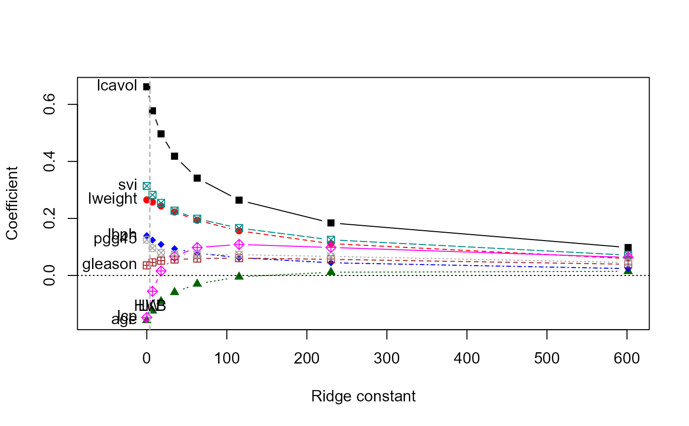
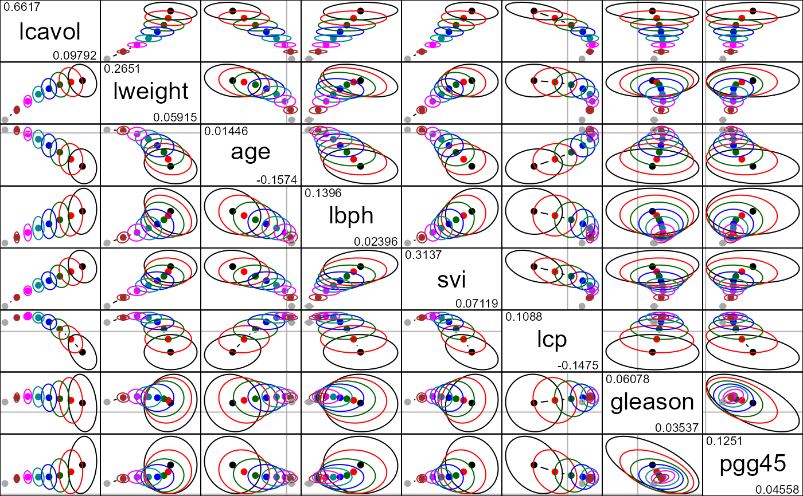

Data to examine the correlation between the level of prostate-specific antigen and a number of clinical measures in men who were about to receive a radical prostatectomy.
Format
A data frame with 97 observations on the following 10 variables.
- lcavol
log cancer volume
- lweight
log prostate weight
- age
in years
- lbph
log of the amount of benign prostatic hyperplasia
- svi
seminal vesicle invasion
- lcp
log of capsular penetration
- gleason
a numeric vector
- pgg45
percent of Gleason score 4 or 5
- lpsa
response
- train
a logical vector
Source
Stamey, T., Kabalin, J., McNeal, J., Johnstone, I., Freiha, F., Redwine, E. and Yang, N (1989) Prostate specific antigen in the diagnosis and treatment of adenocarcinoma of the prostate II. Radical prostatectomy treated patients, Journal of Urology, 16: 1076–1083.
Details
This data set came originally from the (now defunct) ElemStatLearn package.
The last column indicates which 67 observations were used as the "training set" and which 30 as the test set, as described on page 48 in the book.
Note
There was an error in this dataset in earlier versions of the package, as indicated in a footnote on page 3 of the second edition of the book. As of version 2012.04-0 this was corrected.
Examples
data(prostate)
str( prostate )
#> 'data.frame': 97 obs. of 10 variables:
#> $ lcavol : num -0.58 -0.994 -0.511 -1.204 0.751 ...
#> $ lweight: num 2.77 3.32 2.69 3.28 3.43 ...
#> $ age : int 50 58 74 58 62 50 64 58 47 63 ...
#> $ lbph : num -1.39 -1.39 -1.39 -1.39 -1.39 ...
#> $ svi : int 0 0 0 0 0 0 0 0 0 0 ...
#> $ lcp : num -1.39 -1.39 -1.39 -1.39 -1.39 ...
#> $ gleason: int 6 6 7 6 6 6 6 6 6 6 ...
#> $ pgg45 : int 0 0 20 0 0 0 0 0 0 0 ...
#> $ lpsa : num -0.431 -0.163 -0.163 -0.163 0.372 ...
#> $ train : logi TRUE TRUE TRUE TRUE TRUE TRUE ...
cor( prostate[,1:8] )
#> lcavol lweight age lbph svi lcp
#> lcavol 1.0000000 0.2805214 0.2249999 0.027349703 0.53884500 0.675310484
#> lweight 0.2805214 1.0000000 0.3479691 0.442264395 0.15538491 0.164537146
#> age 0.2249999 0.3479691 1.0000000 0.350185896 0.11765804 0.127667752
#> lbph 0.0273497 0.4422644 0.3501859 1.000000000 -0.08584324 -0.006999431
#> svi 0.5388450 0.1553849 0.1176580 -0.085843238 1.00000000 0.673111185
#> lcp 0.6753105 0.1645371 0.1276678 -0.006999431 0.67311118 1.000000000
#> gleason 0.4324171 0.0568821 0.2688916 0.077820447 0.32041222 0.514830063
#> pgg45 0.4336522 0.1073538 0.2761124 0.078460018 0.45764762 0.631528246
#> gleason pgg45
#> lcavol 0.43241706 0.43365225
#> lweight 0.05688210 0.10735379
#> age 0.26889160 0.27611245
#> lbph 0.07782045 0.07846002
#> svi 0.32041222 0.45764762
#> lcp 0.51483006 0.63152825
#> gleason 1.00000000 0.75190451
#> pgg45 0.75190451 1.00000000
prostate <- prostate[, -10]
prostate.mod <- lm(lpsa ~ ., data=prostate)
vif(prostate.mod)
#> lcavol lweight age lbph svi lcp gleason pgg45
#> 2.102650 1.453325 1.336099 1.385040 1.955928 3.097954 2.468891 2.974075
py <- prostate[, "lpsa"]
pX <- data.matrix(prostate[, 1:8])
pridge <- ridge(py, pX, df=8:1)
pridge
#> Ridge Coefficients:
#> lcavol lweight age lbph svi
#> 0.00000 0.6617092 0.2651031 -0.1573777 0.1395860 0.3136993
#> 7.08544 0.5774912 0.2574888 -0.1240459 0.1239824 0.2825540
#> 17.80389 0.4966273 0.2435259 -0.0910692 0.1087544 0.2542261
#> 34.68940 0.4182786 0.2224269 -0.0591493 0.0936983 0.2271752
#> 62.98554 0.3413151 0.1935614 -0.0296600 0.0784146 0.1988651
#> 115.28893 0.2641305 0.1565931 -0.0049775 0.0622832 0.1660546
#> 230.11308 0.1842675 0.1116128 0.0112850 0.0444562 0.1249585
#> 601.44017 0.0979221 0.0591504 0.0144649 0.0239578 0.0711874
#> lcp gleason pgg45
#> 0.00000 -0.1475193 0.0353655 0.1250701
#> 7.08544 -0.0556184 0.0457910 0.0958079
#> 17.80389 0.0159166 0.0518160 0.0800300
#> 34.68940 0.0670223 0.0559538 0.0738953
#> 62.98554 0.0979877 0.0592922 0.0732073
#> 115.28893 0.1087550 0.0607835 0.0729838
#> 230.11308 0.0981548 0.0564920 0.0666687
#> 601.44017 0.0633002 0.0392473 0.0455834
# univariate ridge trace plots
traceplot(pridge)

traceplot(pridge, X="df")
# bivariate ridge trace plots
plot(pridge)
pairs(pridge)
